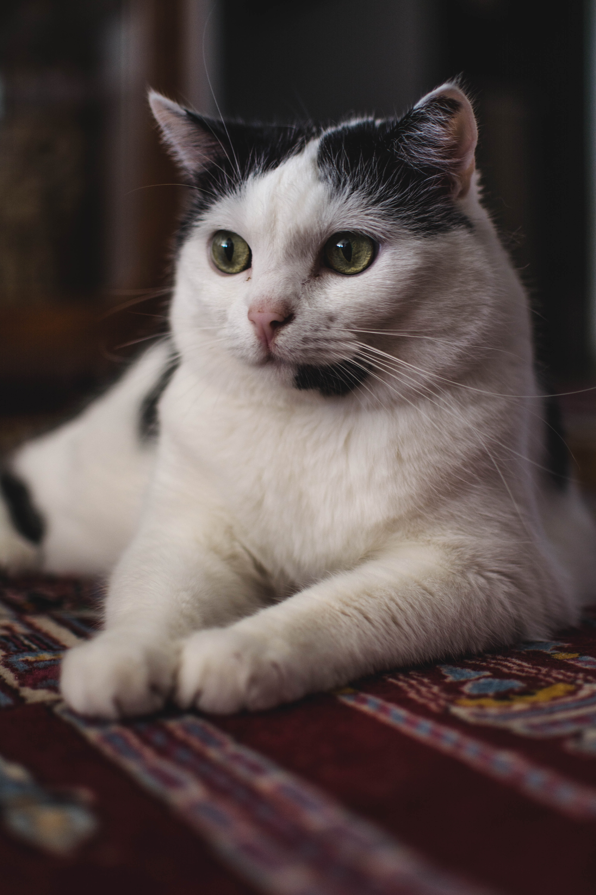
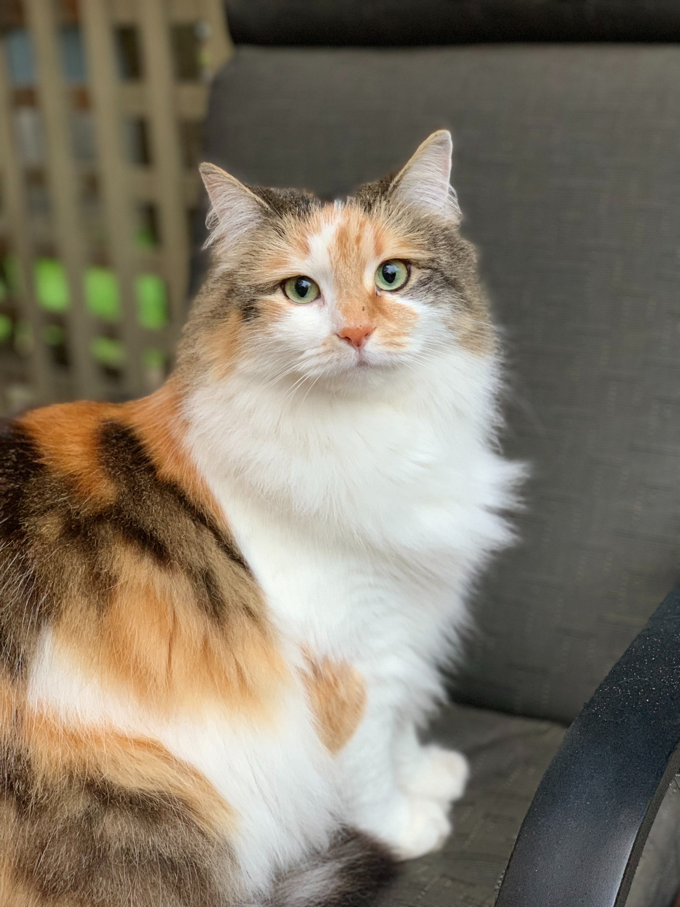

- Name
- Milo
- Type
- Male domestic short hair tabby
- Needs
- Socialised with children and other cats. Needs a dog-free home.
- About
- Milo is a sweet grey tabby with black stripes. He is about a year old and is fully house-trained.
Milo loves head scrathes and playing with cat toys. He has lived in a foster home with children and other cats and is very well socialised.
He is not fond of dogs so would do better in a home without dogs.
If you think Milo would be a good match for your home, we would love to hear from you!
Click Here To Contact Us

- Name:
- Nola
- Type:
- Female domestic shorthair, white chest with ginger and grey markings on her head and back
- Needs:
- Socialised with dogs and children but prefers to be the only cat in the home
- About:
- Nola loves to sit on your lap to nap and be petted. She is very affectionate with people but gets intimadated by
other cats so would be better as an only cat. She is very patient with children and is fully-housetrained.
If you are interested in meeting Nola, click the link below.
Click Here To Contact Us

- Name:
- Bella
- Type:
- Female domestic shorthair, white with black markings
- Needs:
- Needs a quiet home, likes other cats but nervous around dogs, children and a lot of noise
- About:
- Bella is a sweetheart and loves nothing more than a cuddle and some love. She is a bit timid around too much
noise so would suit a quieter home but she is happy in the company of other cats. She is fully-housetrained.
Click Here To Contact Us

- Name:
- Katniss
- Type:
- Female longer hair domestic cat, very fluffy with white chest and belly and ginger and black markings on top of head and back
- Needs:
- Socialised with children, other cats and with dogs. Very easy-going
- About:
- Katniss is usually found sitting in the middle of family life, watching everything that is going on and always ready to interact
with everyone. She is very friendly and affectionate and loves to watch nature documentaries.
Click Here To Contact Us